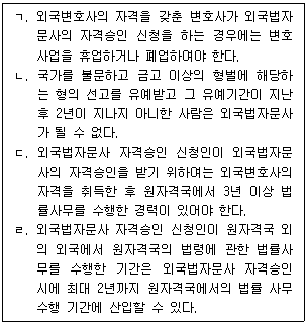
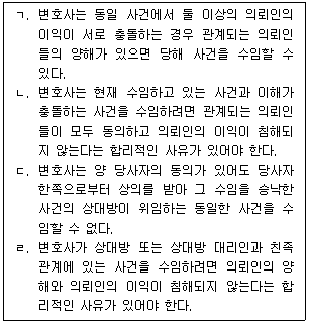
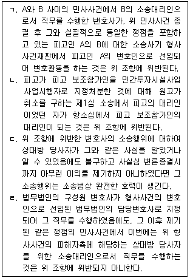
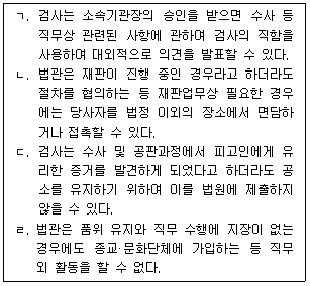

법조윤리 (2015-08-08 기출문제)
1과목: 임의 구분
1. 국선변호인의 윤리에 관한 설명 중 옳은 것은?
- 변호사 甲은 법원으로부터 국선변호인으로 선정되었으나, 그가 변호할 피고인이 저지른 범죄에 대한 사회일반의 비난 정도가 매우 강하다는 이유만으로, 수임을 거절한다는 의사를 법원에 밝혔다. 변호사 甲의 위와 같은 행위는 변호사윤리에 어긋나지 않는다.
- 변호사 乙은 그가 국선변호인으로 변호하는 피고인의 접견을 위해 구치소에 갔는데 특별한 이유 없이 제대로 변호를 하지 못한다며 피고인으로부터 심한 모욕을 받고 더 이상 피고인을 변호할 수 없다고 생각되어 별도의 절차 없이 즉각 사임하였다. 변호사 乙의 사임행위는 정당하다.
- 변호사 丙은 국선변호인으로 선정된 사건의 변호활동을 하던 중 그 성의에 감탄한 피고인의 아버지로부터 그 사건의 사선변호사로 선임하겠다는 의사표시를 받자 국선변호인을 사임하고 사선변호사로 전환하여 사건을 수임하였다. 변호사 丙이 스스로 피고인이나 피고인의 아버지 등에게 자신을 사선변호사로 선임하여 줄 것을 요청하기 위하여 부당하게 교섭한 것이 아니므로 위와 같은 사선변호사로의 전환행위 자체가 변호사윤리에 어긋나는 것은 아니다.
- 변호사 丁은 형사사건의 국선변호인으로 선정되었는데, 알고 보니 위 형사사건의 피고인이 현재 자신이 수임하여 처리 중인 손해배상 청구사건의 상대방 당사자였다. 이와 같은 경우 국선변호인으로 선임된 사건에 있어서는 ｢변호사윤리장전｣상 이익충돌회피의무의 면제에 관한 특칙이 있으므로, 변호사 丁이 국선변호인으로의 선정을 받아들여 그대로 위 형사사건의 변론활동을 하는 것은 정당하다.
(정답률: 알수없음)

2. 외국법자문사에 관한 설명 중 옳은 것을 모두 고른 것은?

- ㄱ, ㄴ
- ㄱ, ㄷ
- ㄴ, ㄹ
- ㄷ, ㄹ
(정답률: 알수없음)
3. L법무법인의 구성원 변호사 甲은 공정거래위원회의 비상임위원을 겸직하고 있다. L법무법인은 X회사로부터 불공정거래행위에 관한 공정거래위원회의 조사사건을 수임하게 되었다. 이에 관한 설명 중 옳지 않은 것은?
- ｢변호사윤리장전｣상 L법무법인은 수임이 제한되는 사건을 수임하지 않도록 의뢰인, 상대방 당사자, 사건명 등 사건 수임에 관한 정보를 구성원 아닌 소속 변호사들도 공유할 수 있도록 적절한 조치를 취해야 한다.
- ｢변호사윤리장전｣상 L법무법인은 변호사 甲이 위 사건의 수임 및 업무수행에 관여하지 않고, 공정거래위원회의 비상임위원을 겸직하고 있는 점이 법무법인의 사건처리에 영향을 주지 아니할 것이라고 볼 수 있는 합리적 사유가 있는 때에는 그 사건을 수임할 수 있다.
- 변호사는 ｢변호사법｣에 따라 상시 근무가 필요 없는 공무원이 되거나 공공기관에서 위촉한 업무를 수행할 수 있으므로, L법무법인은 위 사건을 수임한다는 이유로 변호사 甲에게 공정거래위원회의 비상임위원직을 사직할 것을 요구할 수는 없다.
- ｢변호사윤리장전｣상 L법무법인이 위 사건을 수임하는 경우에 당해 사건을 처리하는 변호사와 변호사 甲이 당해 사건과 관련하여 비밀을 공유하는 일이 없도록 합리적인 조치를 취해야 한다.
(정답률: 알수없음)
4. 대한변호사협회가 등록심사위원회의 의결을 거쳐 변호사 등록을 거부할 수 있는 사유에 해당하지 않는 것은?
- 사석(私席)에서의 폭행 행위로 인하여 벌금형의 선고유예를 받고 그 유예기간 중에 있는 자
- 공무원 재직 중 뇌물을 수수한 행위로 인하여 기소된 자로서 변호사의 직무를 수행하는 것이 현저히 부적당하다고 인정되는 자
- 공무원 재직 중 ｢변호사법｣ 위반 행위로 인하여 징계인 감봉 처분을 받은 자로서 변호사의 직무를 수행하는 것이 현저히 부적당하다고 인정되는 자
- 징계처분에 의하여 면직된 후 2년이 지나지 아니한 자
(정답률: 알수없음)
5. 법조윤리협의회에 관한 설명 중 옳은 것은?
- 법조윤리협의회는 대법원장, 법무부장관 및 대한변호사협회의 장이 각 3명씩 지명하거나 위촉하는 9명의 위원으로 구성한다.
- 법조윤리협의회는 법조윤리와 관련된 법령을 위반한 자에 대한 징계개시의 신청 또는 수사의뢰의 업무를 수행한다.
- 대한변호사협회는 대통령령으로 정하는 수 이상의 사건을 수임한 변호사(특정변호사)의 성명과 사건 목록을 법조윤리협의회에 제출하여야 한다.
- 장기복무 군법무관으로 재직하다가 퇴직하여 변호사 개업을 한 자는 퇴직일부터 1년 동안 수임한 사건에 관한 수임 자료와 처리결과를 일정 기간마다 법조윤리협의회에 제출하여야 한다.
(정답률: 알수없음)
6. 변호사 甲은 법률사무소를 개설하여 운영하던 중 변호사업무와 관련하여 ｢변호사법｣ 위반혐의로 기소되어 징역 1년을 선고받았고, 2015. 3. 3. 그 형의 집행이 종료되었다. 이에 관한 설명 중 옳지 않은 것은?
- 대한변호사협회는 등록심사위원회의 의결을 거쳐 변호사 甲의 등록을 취소하여야 한다.
- 대한변호사협회는 변호사 甲이 2018. 8. 6. 변호사등록 신청을 하는 경우 등록심사위원회의 의결을 거쳐 등록을 거부할 수 있다.
- 대한변호사협회는 위 형의 집행을 이유로 등록을 거부할 경우 1년 이상 2년 이하의 등록금지기간을 설정하여야 한다.
- 대한변호사협회는 등록을 거부하는 경우 지체없이 그 사유를 명시하여 변호사 甲에게 통지하여야 한다.
(정답률: 알수없음)
7. 변호사 징계에 관한 설명 중 옳지 않은 것은? (다툼이 있는 경우 판례에 의함)
- 대한변호사협회 변호사징계위원회의 징계결정은 기본적으로 공권력적 행정처분이다.
- 대한변호사협회 변호사징계위원회의 징계에 대한 결정은 징계혐의자가 그 결정을 송달받은 날부터 효력을 발생한다.
- 대한변호사협회 변호사징계위원회의 결정에 불복하는 징계혐의자는 그 통지를 받은 날부터 30일 이내에 법무부 변호사징계위원회에 이의신청을 할 수 있다.
- 변호사 징계로서의 과태료 결정은 ｢민사집행법｣에 따른 집행력 있는 집행권원과 같은 효력이 있으며 검사의 지휘로 집행한다.
(정답률: 알수없음)
8. 다음 중 변호사가 ｢변호사법｣ 위반으로 형사처벌을 받을 수 있는 경우는?
- 변호사 甲은 자신이 사기 피해자임을 주장하는 A로부터 사기 고소사건의 대리업무를 수임하면서 피고소인 B가 기소되거나 구속된 경우에 성공보수를 지급받기로 약정하였다.
- 변호사 乙은 법률사무소를 개설하면서 C를 사무직원으로 채용하였는데, 채용 당시 C는 폭력행위등처벌에관한법률위반(단체등의구성·활동)죄로 징역 3년을 선고받고 만기출소한 후 2년 4개월이 경과한 상황이었다.
- 변호사 丙은 D의 소송대리인으로서 교통사고로 인한 손해배상청구소송을 제기하여 소송계속 중 종전에 D로부터 받지 못했던 소유권이전등기청구사건의 수임료 명목으로 위 손해배상청구사건의 손해배상청구권을 양수하였다.
- 변호사 丁은 인천지방검찰청에서 검사로 4개월 근무한 후 인천광역시청에 파견되어 9개월 근무하다가 퇴직한 지 1개월만에 E로부터 자신이 직무상 취급한 바 없는 공유물분할청구사건을 수임하여 인천지방법원에 소를 제기하였다.
(정답률: 알수없음)
9. 법무법인에 관한 설명 중 옳지 않은 것은?
- 법무법인의 구성원 변호사가 ｢변호사법｣에 의하여 정직의 징계처분을 받은 경우 그 변호사는 그 법무법인에서 당연히 탈퇴한다.
- 법무법인의 구성원 변호사는 임의로 탈퇴할 수 없다.
- 법무법인의 구성원 및 구성원 아닌 소속 변호사는 자기나 제3자의 계산으로 변호사의 업무를 수행할 수 없다.
- 법무법인이 인가공증인으로서 법률행위에 관한 사실에 대한 공정증서를 작성한 경우에 그 사건에 대한 소송행위를 할 수 없다.
(정답률: 알수없음)
10. L법무법인(유한)은 A회사와 손해배상청구사건의 소송위임계약을 체결하고 구성원 변호사 甲과 구성원 아닌 소속 변호사 乙을 담당변호사로 지정하였고, 구성원 변호사 丙으로 하여금 변호사 甲과 乙을 지휘·감독하게 하였다. 그런데 담당변호사들이 상고이유서 제출기간을 간과한 과실로 상고이유서를 제출하지 않아 상고가 기각됨으로써 A회사에 막대한 손해를 발생시켰다. 이에 관한 설명 중 옳은 것은?
- 변호사 甲과 乙은 A회사에 대하여 연대하여 손해를 배상할 책임이 있지만, L법무법인(유한)은 손해를 배상할 책임이 없다.
- 변호사 甲은 구성원 변호사이므로 A회사에 대하여 L법무법인(유한)과 연대하여 손해를 배상할 책임이 있지만, 변호사 乙은 구성원이 아닌 피고용자에 불과하므로 손해를 배상할 책임이 없다.
- 변호사 甲과 乙 모두 A회사에 대하여 L법무법인(유한)과 연대하여 손해를 배상할 책임이 있다.
- 변호사 丙은 지휘·감독을 할 때에 주의를 게을리하지 아니하였음을 증명하지 못한 경우에는 출자금액의 한도에서 A회사에 대하여 손해를 배상할 책임이 있다.
(정답률: 알수없음)
11. 변호사의 업무제한 및 겸직제한에 관한 설명 중 옳지 않은 것은?
- 변호사는 보수를 받는 공무원을 겸할 수 없다. 다만 법령이 허용하는 경우와 공공기관에서 위촉한 업무를 행하는 경우에는 그러하지 아니하다.
- 변호사는 소속 지방변호사회의 겸직허가를 받으면 상업 기타 영리를 목적으로 하는 업무를 경영하거나, 이를 경영하는 자의 사용인이 될 수 있다.
- 변호사가 폐업한 경우에는 종전 소속 지방변호사회의 겸직허가를 받지 않더라도 주식회사의 이사가 될 수 있으나, 휴업한 경우에는 소속 지방변호사회의 겸직허가를 받아야 주식회사의 이사가 될 수 있다.
- 변호사가 법무법인·법무법인(유한) 또는 법무조합의 구성원이 되거나 소속 변호사가 되는 경우에는 보수의 획득을 목적으로 하는 경우라도 소속 지방변호사회의 허가를 필요로 하지 않는다.
(정답률: 알수없음)
12. 변호사와 의뢰인의 관계에 관한 설명 중 옳지 않은 것은? (다툼이 있는 경우 판례에 의함)
- 변호사가 의뢰인에게 의무를 부담하는 사무의 범위는 변호사와 의뢰인 사이에 체결된 위임계약의 내용에 따라 결정된다.
- 피사취수표와 관련된 본안소송을 위임받은 변호사는 사고신고담보금에 대한 권리보전 조치의 위임을 받은 바 없다면, 적극적으로 사고신고담보금에 대한 권리보전 조치를 할 의무는 없다.
- 변호사는 의뢰인에게서 전달받은 서류의 일부가 의뢰인에 의해 변조되었고, 변조된 내용을 토대로 소장의 청구원인사실이 기재되어 있어 소송사기가 될 수 있다는 사실을 소 제기 후에 알게 된 때에는 수임계약을 해지하는 등의 방법으로 위법행위에 대한 협조를 중단해야 한다.
- 변호사는 의뢰인과 직무와 관련한 분쟁이 발생한 경우에는 대한변호사협회의 조정에 의하여 분쟁을 해결하도록 노력한다.
(정답률: 알수없음)
13. 변호사의 사건수임제한에 관한 설명 중 옳은 것은?
- L법무법인의 구성원 변호사 甲은 피고인 A의 사기사건을 담당하고 있는데, 위 사기사건에서 A를 가해자로 고소한 B로부터 A를 상대로 제기한 위 사기사건 관련 손해배상청구사건을 수임하려면, L법무법인을 탈퇴한 뒤 개인 변호사 자격으로 수임하여야 한다.
- 변호사 乙은 판사로서 X회사와 Y회사 사이의 대여금사건을 재판하던 중 사직하고 변호사로 개업하였는데, 그 후 다른 판사가 1심판결을 선고한 경우, 변호사 乙은 항소심 계속 중 Y회사가 X회사를 상대로 낸 반소청구에서 Y회사의 소송대리인이 될 수 없다.
- 변호사 丙은 C남이 D녀의 부정행위를 이유로 제기한 이혼소송에서 D녀를 대리하고 있는데, 이혼소송계속 중 C남이 자신과 통정한 바 있는 E녀의 남편으로부터 불법행위에 의한 손해배상청구소송을 당한 경우, 변호사 丙은 C남으로부터 그 손해배상청구사건을 수임함에 있어 아무런 제한을 받지 않는다.
- 변호사 丁이 F가 피고로 되어 있는 소유권이전등기청구소송에서 F의 대리인으로서 소송을 진행하고 있던 중 위 사건과는 별개로 F를 피고로 하는 대여금청구소송이 제기된 경우, 대여금청구소송의 원고가 누구인지 관계없이 그로부터 사건을 수임할 수 있다.
(정답률: 알수없음)
14. 변호사와 의뢰인의 관계에 관한 설명 중 옳지 않은 것은? (다툼이 있는 경우 판례에 의함)
- 의뢰인으로부터 사건을 수임한 변호사는 전문적인 법률지식과 경험에 기초하여 성실하게 의뢰인의 권리를 옹호할 의무가 있음과 아울러 의뢰인과의 신뢰관계를 깨뜨리는 행위를 하지 않아야 할 의무도 있다.
- 변호사가 그 재량적 판단에 기초하여 성실하게 수임사무를 처리한 것으로 인정될 경우에는 의뢰자의 지시에 반하거나 재량권의 범위를 일탈한 것으로 인정되지 않는 한 변호사에게 수임계약상의 채무불이행책임 또는 불법행위책임을 물을 수 없다.
- 가압류·가처분 등 보전소송사건을 수임한 소송대리인의 소송대리권은 본안의 제소명령신청권과 제소명령결정을 송달받을 권한에까지 미친다.
- 형사사건에 있어 변호인을 선임할 수 있는 자는 피고인, 피의자, 피고인·피의자의 법정대리인, 배우자, 직계친족, 형제자매, 피고인·피의자로부터 변호인선임권을 위임받은 자이다.
(정답률: 알수없음)
15. 이익충돌회피의무에 관한 설명 중 옳은 것을 모두 고른 것은? (다툼이 있는 경우 판례에 의함)

- ㄱ, ㄴ
- ㄱ, ㄷ
- ㄴ, ㄷ
- ㄷ, ㄹ
(정답률: 알수없음)
16. X회사 대표이사 A는 직원을 시켜 독극물이 섞인 폐수를 무단으로 강에 방류하였다. 이로 인하여 강 주변에 살던 주민 수십 명이 폐수에 오염된 지하수를 마시는 바람에 사망하였다. 언론에서 위 사건을 대대적으로 보도하자 X회사와 A는 국민들의 공분을 사게 되었다. A는 미필적 고의에 의한 살인죄로 기소되었다. 이에 X회사는 이전에 법률자문을 하였던 변호사 甲에게 A를 변호해 달라고 의뢰하였고, 변호사 甲은 고심 끝에 사건을 수임하였다. 변호사 甲에 대한 설명 중 옳은 것은?
- 사회적으로 비난받는 자로부터 사건을 수임하여 무죄를 주장한다면 변호사의 공익적 역할에 비추어 볼 때 정당하지 못하므로 수임한 것은 위법하다.
- 사회적 비난의 대상이 된 X회사의 법률자문을 그만둔 이상 위 회사에서 의뢰한 사건을 수임하는 것은 위법하다.
- A에게 주민들의 사망에 대한 책임이 없다고 적극 변론하는 것은 변호사 직무의 공공성에 반한다.
- 변호사로서 직업윤리에 따라 사회적 비난에도 불구하고 A에게는 살인의 고의가 없었다는 점을 적극 주장할 수 있다.
(정답률: 알수없음)
17. 변호사 甲과 乙은 법학전문대학원을 졸업한 후에 함께 행운합동법률사무소를 설립하였다. 변호사 甲과 乙은 대외적으로 위 법률사무소의 공동대표로 활동하였다. 내부적으로는 위 법률사무소의 인건비, 사무실 임대료 등 운영에 소요되는 비용을 반반씩 분담하고, 수익은 변호사 甲과 乙의 수입액 비율에 따라 분배하였다. 2015. 5. 6. 변호사 甲이 사기죄로 구속된 A의 국선변호인을 맡아 그 업무를 수행하던 중, 그 사기사건의 피해자인 B가 변호사 乙에게 찾아와 A를 상대로 제기하는 편취금에 대한 민사사건을 맡을 수 있는지를 문의하였다. 변호사 乙은 B가 의뢰하는 민사사건을 수임할 수 있는가?
- 있다. 합동법률사무소는 법무법인, 법무법인(유한), 법무조합이 아니므로, 법률상 변호사 甲과 乙은 독립적으로 법률사무소를 운영하는 것으로 취급되고, 합동법률사무소를 ｢변호사법｣에 따른 '하나의 변호사'로 볼 수 없어 수임제한규정이 적용되지 않기 때문이다.
- 있다. 변호사 甲과 乙이 합동법률사무소의 공동대표로 활동하고 그 운영 비용도 동일 비율로 분담한다 하더라도, 수익을 각자 수임사건의 수입액에 따라 분배하고 있는 이상 합동법률사무소를 ｢변호사법｣에 따른 '하나의 변호사'로 볼 수 없어 수임제한 규정이 적용되지 않기 때문이다.
- 없다. 합동법률사무소는 법무법인, 법무법인(유한), 법무조합은 아니지만, 변호사 甲이 국선변호인으로 활동하는 경우 당해 사건에 한정하여 합동법률사무소를 ｢변호사법｣에 따른'하나의 변호사'로 볼 수 있어 수임제한규정이 적용되기 때문이다.
- 없다. 변호사 甲과 乙이 수익을 각자 수임사건의 수익에 따라 분배하고, 합동법률사무소의 공동대표로 활동하고, 그 운영 비용도 동일 비율로 분담하고 있으므로, 합동법률사무소를 ｢변호사법｣에 따른 '하나의 변호사'로 볼 수 있어 수임제한규정이 적용되기 때문이다.
(정답률: 알수없음)
18. 변호사의 비밀유지의무에 관한 설명 중 옳지 않은 것은?
- 법무법인의 소속 변호사는 해당 법무법인의 다른 변호사가 의뢰인과 관련하여 직무상 비밀유지의무를 부담하는 사항을 알게 된 경우 해당 법무법인에서 퇴직한 경우에도 이에 대한 비밀유지의무가 있다.
- 변호사는 업무수행에 필요한 경우에는 자신이 운영하는 법률사무소의 직원에게 의뢰인의 비밀을 알릴 수 있지만 그 직원으로 하여금 비밀을 유지하게 하여야 한다.
- 변호사는 업무상 위탁을 받아 소지하는 물건으로 타인의 비밀에 관한 것은 압수를 거부할 수 있다.
- 변호사의 직책에 있었던 사람이 민사사건의 증인으로 직무상 비밀에 속하는 사항에 대하여 신문을 받을 때에는 증언을 거부할 수 있지만, 직무상 비밀에 속하는 사항이 적혀 있는 문서의 제출까지 거부할 수는 없다.
(정답률: 알수없음)
19. '당사자 한쪽으로부터 상의를 받아 그 수임을 승낙한 사건의 상대방이 위임하는 사건'의 수임을 금지하는 ｢변호사법｣ 제31조 제1항 제1호에 관한 설명 중 옳은 것을 모두 고른 것은? (다툼이 있는 경우 판례에 의함)

- ㄱ, ㄷ
- ㄱ, ㄹ
- ㄴ, ㄷ
- ㄷ, ㄹ
(정답률: 알수없음)
20. 변호사 甲은 A의 업무상횡령사건의 변호인으로 활동하는 과정에서 A가 과거 사기사건에서 유죄판결을 받은 사실을 알게 되었다. A는 업무상횡령사건의 공판에서 무죄판결을 받았지만 변호사 甲에게 수임료를 제대로 지급하지 않았다. 그 이후 변호사 甲은 A가 X기업의 이사로 재직한다는 소식을 듣고서, X기업의 대표이사 등에게 A가 이전에 사기사건 유죄판결을 받았기에 업무에 부적절하다는 내용을 알려 주었다. 이로 인하여 A는 X기업의 이사직에서 해임되었다. 이에 관한 설명 중 옳은 것은?
- 변호사 甲의 행위는 비밀유지의무 위반으로 징계 대상이자 ｢변호사법｣상 형사처벌의 대상이다.
- 변호사 甲의 행위는 비밀유지의무 위반이긴 하나, 공익을 위한 것으로서 위법성이 없으므로 징계 대상이 아니다.
- 변호사 甲의 행위는 비밀유지의무 위반으로 징계 대상이나, ｢변호사법｣상 형사처벌의 대상은 아니다.
- 변호사 甲의 행위는 비밀유지의무 위반이긴 하나, 형법상 업무상비밀누설죄는 고소가 있어야 처벌할 수 있는데 아직 고소가 이루어지지 않았으므로 징계 대상이 아니다.
(정답률: 알수없음)
2과목: 임의 구분
21. A와 B가 공동대표이사인 X회사는 오리, 동충하초, 녹용 등 여러 재료를 혼합하여 가공한 제품을 판매하는 회사이며, 변호사 甲은 지난 3년간 X회사의 영업과 관련한 법률자문을 해왔다. 그러던 중 A는 위 제품을 당뇨병에 탁월한 효능이 있는 약이라는 허위광고로 고가에 판매한 것과 관련하여 그 사술의 정도가 사회적으로 용인될 수 있는 상술의 정도를 넘은 것이라는 이유로 사기죄로 기소되었고, 변호사 甲이 변호인으로 선임되었다. 한편 검사는 변호사 甲이 A에게 보낸 허위광고임을 인정하는 내용이 기재된 법률의견서를 압수하여 위 사기죄에 대한 증거자료로 제출하였다. 이 사건에서 A는 실제로는 B가 저지른 허위광고 등 사기 범행을 자신이 저질렀다는 취지로 허위자백을 하였는데, 변호사 甲은 A와 B 사이에 부정한 거래가 진행 중이라는 점을 알았음에도 A와 B 사이에 허위자백에 대한 대가로 금전을 지급하기로 하는 합의가 성사되도록 도와 진범인 B를 은폐하는 A의 허위자백을 유지하게 하였다. 이에 관한 설명 중 옳지 않은 것은? (다툼이 있는 경우 판례에 의함)
- 변호사 甲은 비밀유지의무가 있으므로 법률의견서의 내용을 수사기관에서 진술하여서는 안 된다.
- 변호사 甲이 A에 대한 형사재판의 공판기일에 증인으로 출석하여 X회사로부터 업무상 위탁을 받은 관계로 알게 된 타인의 비밀에 관한 것임을 소명한 후 법률의견서의 진정성립에 관하여 아무런 진술을 하지 않는 것은 정당한 증언거부권의 행사이다.
- 변호사 甲의 법률의견서는 변호인과 의뢰인 사이에서 의뢰인이 법률자문을 받을 목적으로 비밀리에 이루어진 의사교환이 포함된 문서이므로, 이른바 변호인-의뢰인 특권에 기하여 증거능력이 없다.
- 변호사 甲이 A의 허위자백을 유지하게 한 행위는 A의 범인도피행위에 대한 결의를 강화하게 한 방조행위로 평가될 수 있으며, 변호사 甲은 범인도피방조죄로 처벌될 수 있다.
(정답률: 알수없음)
22. 변호사 甲은 건강기능식품을 제조·판매하는 A회사의 사내변호사이다. 변호사 甲은 “A회사가 건강기능식품 중 가장 잘 팔리는 X제품에 허가받은 원재료가 아닌 저가의 유해원료를 사용하여 과도한 수익을 올리고 있다.”라는 담당 직원의 제보를 받고 내부 조사절차를 거쳐 위 제보가 진실이라는 것을 확인하였다. 이에 관한 설명 중 타당한 것은?
- 변호사 甲은 A회사의 이익을 위해 담당 직원에게 더 이상 재론하지 못하도록 권고하고, 더 이상의 조치를 취하면 안 된다.
- 변호사 甲은 먼저 그 행위를 저지하거나 시정할 권한이 있는 자에게 알리고 시정을 위해 노력하는 것이 바람직하다.
- 변호사 甲은 확인 즉시 수사기관에 수사를 의뢰하거나 언론에 위 내용을 공개하여야 할 의무가 있다.
- 변호사 甲은 A회사의 대표이사나 이사회에 조사 사실을 통보하면 되고, 이후 절차는 위법하더라도 회사 지시대로 업무를 수행하면 된다.
(정답률: 알수없음)
23. 변호사와 의뢰인의 관계에 관한 설명 중 옳지 않은 것은? (다툼이 있는 경우 판례에 의함)
- 공사대금과 관련한 사기사건의 피해자로부터 형사고소사건을 수임한 변호사는 의뢰인의 공사대금채권을 확보하기 위하여 피고소인들의 재산에 대해서 보전처분을 신청할 의무가 있다.
- 변호사가 의뢰인의 위임에 따라 장기간 동안 소송사건 외에도 의뢰인이 상속받은 부동산을 매각하고 상속재산을 분할하는 사무 등을 처리하여 왔고, 그 사무에 관하여 의뢰인이 변호사를 지휘·감독하는 관계에 있으며 그 사무가 외형상 객관적으로 의뢰인의 사무로 볼 수 있다면, 그 사무에 관한 변호사의 불법행위에 대하여 의뢰인이 사용자 책임을 진다.
- 변호사는 의뢰인의 지시에 따르는 것이 위임의 취지에 적합하지 않거나 오히려 의뢰인에게 불이익한 결과가 될 경우, 그러한 내용을 의뢰인에게 알리고 의뢰인의 진정한 의사를 확인한 후, 의뢰인에게 이익이 되도록 사무를 처리해야 할 의무가 있다.
- 변호사가 의뢰인으로부터 소유권이전등기 신청사무를 수임할 경우, 인감증명서나 주민등록증을 제출받거나 기타 이에 준하는 방법으로 의뢰인이 소유자 본인 또는 그의 적법한 대리인인지 여부를 확인하고 수임해야 할 의무가 있다.
(정답률: 알수없음)
24. 변호사 甲은 A로부터 소송대리를 위임받아(상소에 대한 특별수권을 받지 않았다) B를 상대로 교통사고를 원인으로 한 손해배상청구의 소를 제기하였으나, 제1심에서 일부패소하였다. 마침 변호사 甲이 출장 중이라 사무장인 C가 그 판결을 송달받았다. 그 판결은 일실수입과 호프만수치를 잘못 계산하여 A의 청구 중 상당부분을 기각한 명백한 잘못이 있었다. 그러나 C는 변호사 甲과 상의하지 않고 이 판결을 A에게 전달하면서 항소할 경우 기각될 가능성이 높다고만 설명하였다. A는 그 말을 듣고 항소하지 아니함으로써 위 판결이 확정되었다. 변호사 甲의 책임은? (다툼이 있는 경우 판례에 의함)
- 손해배상책임이 없다. 사무장의 과실 있는 행위에 대하여 변호사에게 손해배상의무가 있지만, 상소에 대한 특별수권이 없는 경우 심급대리의 원칙에 따라 판결정본을 송달받는 때에 변호사와 의뢰인 사이의 계약관계가 종료되기 때문이다.
- 손해배상책임이 없다. 변호사의 출장 중에 사무장의 전적인 과실로 인하여 의뢰인에게 손해가 발생한 경우 변호사에게 손해배상책임이 발생하지 않기 때문이다.
- 손해배상책임이 있다. 변호사에게 상소에 관한 특별수권이 없는 경우에도 패소판결을 검토하여 상소하는 때의 승소가능성에 대하여 조언하여야 할 의무가 있기 때문이다.
- 손해배상책임이 있다. 변호사에게 상소에 관한 특별수권이 없으므로 상소 시 승소가능성에 관하여 조언할 의무가 있다고 할 수 없으나, 이 사건의 경우 조언을 하였고 조언을 한 이상 잘못된 조언을 한 경우에는 손해배상책임이 발생하기 때문이다.
(정답률: 알수없음)
25. 의뢰인에 대한 변호사의 비밀유지의무가 해제되는 경우가 아닌 것은?
- 의뢰인의 구체적인 살인계획을 알게 되어 이를 예방하기 위한 경우
- 의뢰인과의 수임관계에서 발생한 변호사의 청구권을 확보하기 위한 경우
- 변호사가 의뢰인을 대리하여 처리한 사건과 관련하여 징계절차에 회부되었을 때 자신의 비위혐의가 없음을 입증하기 위한 경우
- 변호사가 타인의 민사소송에서 증인으로 선서한 경우
(정답률: 알수없음)
26. 다음 설명 중 옳지 않은 것은? (다툼이 있는 경우 판례에 의함)
- 변호사에게 계쟁 사건의 처리를 위임함에 있어서 그 보수 지급 및 수액에 관하여 명시적인 약정을 하지 않은 경우에도, 무보수로 한다는 등 특별한 사정이 없는 한 응분의 보수를 지급할 묵시의 약정이 있다고 보아야 한다.
- 변호사의 소송위임사무처리에 대한 보수에 관하여 당사자 간에 그 액수의 약정이 없는 경우에는 법원은 사건수임의 경위, 사건의 경과와 난이 정도, 소송물가액, 승소로 인하여 당사자가 얻는 구체적 이익 및 의뢰인과 변호사 간의 관계 기타 변론에 나타난 제반 사정을 참작하여 결정함이 상당하다.
- 변호사 선임 계약은 원칙적으로 위임계약의 성질을 가지므로 반드시 일정한 결과를 발생시켜야 하는 것은 아니며 선량한 관리자의 주의로 수임사무를 처리하는 것으로 충분하다.
- 민사 사건에서 위임인이 임의로 위임계약을 중도 해지한 경우를 승소로 간주하여 성공보수를 변호사에게 지급하기로 하는 개별적·구체적 약정이 있더라도 그 약정은 효력이 없다.
(정답률: 알수없음)
27. 변호사 甲은 미국에 유학해서 뉴욕 주 변호사 자격을 취득하였다. 그 후 대한변호사협회에 자신의 전문분야를 국제거래, 해외투자 두 분야로 등록하고 이를 자신의 명함에 새겨서 의뢰인들이나 지인들에게 나누어 주었다. 또한 변호사 甲은 2015년 여름 휴가철 동안 외국계 기업이 다수 입주해 있는 여의도 소재 A빌딩 입구에 현수막을 설치하고 '국제거래 및 해외투자 최고의 전문가 甲변호사'라는 내용의 광고를 실시하였다. 이에 관한 설명 중 옳은 것은?
- 변호사 甲은 인수합병을 전문분야로 추가 등록할 수 있다.
- 전문분야 등록의 유효기간은 등록일로부터 5년으로서, 갱신신청할 수 있다.
- 현수막에 적은 광고내용은 문제없지만, 현수막을 이용한 광고방법은 허용되지 않는다.
- 소속 지방변호사회장은 광고심사위원회의 의결을 거쳐 위반행위의 중지 또는 시정을 요구할 수 있으나 경고만 할 수는 없다.
(정답률: 알수없음)
28. 다음 설명 중 옳지 않은 것은? (다툼이 있는 경우 판례에 의함)
- 변호사가 자신의 사무직원에게 사건 소개비로 수임료 중 일정 비율을 급여나 상여금 명목으로 지급하는 것은 ｢변호사법｣에 위반된다.
- 변호사가 공인노무사를 직원으로 고용하여 그 보조를 받아 산업재해 사건을 처리하고 정해진 급여를 지급하는 것은 ｢변호사법｣에 위반되지 아니한다.
- 변호사가 의뢰인으로부터 세무 사건을 수임하여 검토를 하던 중 세무사에게 자문을 구하고, 이에 대한 자문료를 지급하는 것은 변호사 아닌 자와 보수를 분배하는 것으로 ｢변호사법｣에 위반된다.
- 포털사이트에 법률상담 배너를 만들어 변호사의 웹 사이트와 링크하여 변호사가 포털사이트 운영자에게 법률상담의 대가인 상담료의 일정 비율을 운영비용 명목으로 약정하여 지급하는 것은 변호사 아닌 자와 보수를 분배하는 것으로 ｢변호사법｣에 위반된다.
(정답률: 알수없음)
29. 서울 소재 한 교회 신도 36명은 미국 서부지역 단체관광에 나섰다. 이들은 버스 두 대에 탑승하여 가다가 LA 인근 고속도로에서 다중 충돌사고를 당해 8명이 사망하고 28명이 부상을 입었다. 미국 캘리포니아 주 변호사자격도 가지고 있는 변호사 甲은 이 사건의 피해자들 및 그 가족들에게 자신을 광고하려고 한다. 다음 중 ｢변호사업무광고규정｣상 허용되는 것은?
- 소속 지방변호사회의 허가를 받아 피해자 및 그 가족들에게 광고성 우편물을 발송한다.
- 광고 전단을 이 사건 피해자들이 다니는 교회 앞 도로상의 시설에 비치한다.
- 미국에서 발생한 다른 항공사고 처리 전력을 언급하며 사례의 사건에 관련하여 방송에 출연한 다른 변호사보다 단체여행 사고처리 전문성이 높다고 홍보한다.
- 국내 변호사 자격뿐만 아니라 미국 캘리포니아 주 변호사 자격을 함께 갖춘 국제변호사라고 자신을 소개한다.
(정답률: 알수없음)
30. 다음 중 ｢변호사업무광고규정｣상 허용되지 않는 것은?
- 변호사 甲 : 주간신문에 법무법인의 구성사실과 구성원들의 이력에 대한 내용을 표시한 광고를 게재하였다.
- 변호사 乙 : 무료신문에 개인회생, 소비자파산 등의 업무를 처리한다는 내용의 광고를 게재하였다.
- 변호사 丙 : 케이블 TV에 무료법률 상담을 한다는 광고를 하였다.
- 변호사 丁 : 자신이 졸업한 대학교 총동창회 명부를 입수하여 명부에 기재된 동창 전원에게 전화를 걸어 광고를 하였다.
(정답률: 알수없음)
31. 변호사의 보수에 관한 설명 중 옳지 않은 것은? (다툼이 있는 경우 판례에 의함)
- 변호사는 정당한 사유가 있는 경우 약정한 보수에 추가하여 보수를 요구할 수 있다.
- 변호사는 사건을 수임할 경우에는 보수에 관한 명확한 약정을 하고 가급적 이를 서면으로 체결하여야 한다.
- 원칙적으로 단체의 비용으로 지출할 수 있는 변호사 선임료는 단체 자체가 소송당사자가 된 경우에 한하므로 단체의 대표자 개인이 당사자가 된 민·형사사건의 변호사 비용은 단체의 비용으로 지출할 수 없는 것이 원칙이다.
- 법인이 형식적으로 소송당사자가 되어 있을 뿐 실질적인 당사자가 따로 있고 법인으로서는 그 소송의 결과에 있어서 별다른 이해관계가 없다고 볼 특별한 사정이 있는 경우에도, 소송의 당사자는 법인이므로 법인의 비용으로 이를 위한 변호사 선임료를 지출할 수 있다.
(정답률: 알수없음)
32. 사건 수임과 관련한 변호사의 행위 중 허용되는 것은?
- 변호사 甲은 자신의 과거 의뢰인이던 회사의 담당 임·직원들을 방문하여 자신의 법률사무소 홍보물을 전달하였다.
- 변호사 乙은 사건을 유치할 목적으로 자신의 법률사무소 인근 병원에 직원을 파견하여 환자들과 접촉을 하게 하였다.
- 변호사 丙은 친분이 없는 지역 유지인 A가 형사사건으로 기소되었다는 소식을 듣고 A에게 형사사건의 의뢰를 권유하는 내용의 우편물을 발송하였다.
- 변호사 丁은 사건의 알선을 업으로 하는 자로부터 사건의 소개를 받았으나, 아무런 재산상 이익을 제공하지는 않았다.
(정답률: 알수없음)
33. 변호사 甲은 자신과 절친한 A로부터 민사소송사건을 의뢰받았으나 현재 하고 있는 업무가 너무 많아 바쁜 관계로 사건을 수임할 수 없었다. 변호사 甲은 A의 양해를 얻어 혼자서 법률사무소를 운영하고 있는 법학전문대학원 동기생인 변호사 乙에게 A를 소개해 주었다. 변호사 甲은 추후에 A의 사건이 승소로 종결될 경우 변호사 乙로부터 그 사건에 대한 성공보수금 중 30%를 받기로 하였다. 변호사 甲의 행위는 ｢변호사법｣에 위반되는가?
- 그렇다. 변호사 甲은 변호사 乙로부터 착수금이 아니라 성공보수를 분배받기로 한 것이므로 ｢변호사법｣ 위반에 해당한다.
- 그렇다. 변호사 甲이 변호사 乙에게 A를 소개하고 그 대가로 보수를 받기로 한 행위는 甲이 변호사인지 여부에 상관없이 ｢변호사법｣ 위반에 해당한다.
- 아니다. 변호사 甲은 변호사인 乙에게서 보수를 분배받기로 한 것이므로 ｢변호사법｣ 위반에 해당되지 않는다.
- 아니다. 변호사가 사건에 관한 상담을 한 후 의뢰인에게 다른 변호사를 소개시켜 주는 것도 변호사의 업무범위에 해당되므로 ｢변호사법｣ 위반에 해당되지 않는다.
(정답률: 알수없음)
34. 변호사 甲은 공정거래위원회에서 2014. 5. 7.부터 1년간 근무하다가 퇴직한 후 법률사무소를 개설하였다. 2015. 8. 7. 변호사 甲은 공정거래위원회에서 조사 중인 ｢독점규제 및 공정거래에 관한 법률｣ 위반 사건을 수임하려고 한다. 이에 관한 설명 중 옳지 않은 것은?
- 변호사 甲이 변호사 乙의 명의를 빌려 사건을 처리하는 것은 ｢변호사법｣ 위반이 된다.
- 사건 당사자가 변호사 甲의 사촌 형일 때에는 수임할 수 있다.
- 소속 지방변호사회가 무상 공익활동 수행자로 변호사 甲을 지정한 것이라면 수임할 수 있다.
- 변호사 甲이 2014. 5. 6.까지 기획재정부에서 근무하다가 2014. 5. 7.에 육아 휴직을 하면서 공정거래위원회에 적을 두었지만 실제로 근무하지는 않았다고 하여도 수임할 수 없다.
(정답률: 알수없음)
35. 변호사의 공익활동에 관한 설명 중 옳지 않은 것은?
- 공증인가합동법률사무소의 경우 그 구성원인 개인회원 전원을 대신하여 공익활동을 행할 변호사를 지정하여 그 변호사로 하여금 공익활동을 하게 할 수 있다.
- 법무법인의 소속변호사 전원을 대신하여 공익활동을 수행한 변호사는 그가 행한 공익활동시간 중 그에게 배분이 인정된 시간에 한하여 그 수행변호사 자신의 공익활동시간으로 본다.
- 상당한 보수를 받고 법령 등에 의해 관공서로부터 위촉받은 사항에 관하여 하는 활동은 공익활동에 해당된다.
- 지방변호사회가 설립한 공익재단에 대한 기부행위도 공익활동에 포함된다.
(정답률: 알수없음)
36. 형사사건으로 고소가 되어 수사기관으로부터 피의자로 수사를 받고 있던 A는 이 사건에 대한 변호를 부탁하기 위해 변호사 甲을 찾았다. A는 변호사 甲과의 상담과정에서 자신이 피해자 B를 각목으로 폭행한 사실을 시인하면서 다만 수사기관이나 법원에 이 사실이 그대로 드러날 경우 중형을 받게 될 것을 염려하였다. 이에 관한 변호사 甲의 태도로서 타당하지 않은 것은?
- A의 폭행사실이 인정된다는 이유만으로 A의 변호를 거부하는 것은 타당하지 않고, 인정된 사실관계를 전제로 최대한 A에게 유리한 결과가 나올 수 있도록 최선의 변호를 진행한다.
- 정식 기소가 되기 전이라도 A의 변호를 위해 필요하다면 수사기관에 선임계를 제출하여 적극적으로 변호를 진행할 수 있다.
- A가 사건 수임여부를 결정할 수 있도록 A에게 이 사건의 전체적인 예상진행과정, 수임료와 비용, 기타 필요한 사항을 설명한다.
- 폭행사실 자체를 부인할 수는 없고 그렇다고 하여 각목으로 폭행한 사실 자체를 인정하면 중형이 예상되기 때문에, 폭행사실은 인정하되 각목 등 위험한 물건으로 폭행한 것은 아니라고 적극적으로 변론하고 A에게는 각목을 없애도록 조언한다.
(정답률: 알수없음)
37. X주식회사의 전무이사인 A가 휴일에 개인적인 용무로 자신의 승용차를 운전하던 중 신호위반을 하여 B가 운전하던 화물차와 충돌하여 B에게 중상을 입혔다. B가 A를 상대로 교통사고로 인한 손해배상청구의 소를 제기하면서 X주식회사의 고문변호사인 甲을 소송대리인으로 선임하려고 한다. 변호사 甲은 B로부터 위 사건을 수임할 수 있는가?
- X주식회사의 동의를 얻는 경우에만 수임할 수 있다.
- A의 동의를 얻는 경우에만 수임할 수 있다.
- X주식회사와 A의 동의 여부에 관계없이 수임할 수 없다.
- X주식회사와 A의 동의 여부에 관계없이 수임할 수 있다.
(정답률: 알수없음)
38. 변호사 아닌 자가 법률사무의 취급에 관여하는 것을 금지함으로써 변호사제도를 유지하고자 하는 ｢변호사법｣ 제109조 제1호는'변호사가 아니면서 금품·향응 또는 그 밖의 이익을 받거나 받을 것을 약속하고 또는 제3자에게 이를 공여하게 하거나 공여하게 할 것을 약속하고 다음 각 목의 사건에 관하여 감정·대리·중재·화해·청탁·법률상담 또는 법률 관계 문서 작성, 그 밖의 법률사무를 취급하거나 이러한 행위를 알선한 자'를 처벌하도록 규정하고 있다. 이에 관한 설명 중 옳지 않은 것은? (다툼이 있는 경우 판례에 의함)
- 위 법조에서 말하는 '이익'은 비변호사의 법률사무 취급을 금하는 위 법의 입법취지 등에 비추어 볼 때, 실비변상을 넘는 경제적 이익에 한한다고 해석하여야 할 것이고, 단순한 실비변상을 받았음에 불과한 때에는 위 법 소정의 법률사무 취급이 있어도 범죄가 된다고 할 수 없다.
- 위 법조에서 말하는 '대리'에는 본인의 위임을 받아 대리인의 이름으로 법률사건을 처리하는 법률상의 대리뿐만 아니라 법률적 지식을 이용하는 것이 필요한 행위를 본인을 대신하여 행하는 것도 포함되나, 법률적 지식이 없거나 부족한 본인을 위하여 사실상 사건의 처리를 주도하면서 그 외부적인 형식만 본인이 직접 행하는 것처럼 하는 등으로 대리의 형식을 취하지 않고 실질적으로 대리가 행하여지는 것과 동일한 효과를 발생시키고자 하는 경우는 포함되지 않는다.
- 위 법조에서 말하는 '알선'이라 함은 법률사건의 당사자와 그 사건에 관하여 대리 등의 법률사무를 취급하는 상대방 사이에서 양자 간에 법률사건이나 법률사무에 관한 위임계약 등의 체결을 중개하거나 그 편의를 도모하는 행위를 말한다.
- 위 법조에서 말하는 '알선'에 있어서는, 현실적으로 위임계약 등이 성립하지 않아도 무방하고, 그 대가로서의 보수(이익)를 알선을 의뢰하는 자뿐만 아니라 그 상대방 또는 쌍방으로부터 받거나 받을 것을 약속한 경우도 포함하며, 이러한 보수의 지급에 관한 약속은 그 방법에 아무런 제한이 없고 반드시 명시적임을 요하는 것도 아니다.
(정답률: 알수없음)
39. 변호사의 사무직원 채용에 관한 설명 중 옳지 않은 것은?
- ｢폭력행위 등 처벌에 관한 법률｣ 제3조(집단적 폭행 등)에 따라 징역형의 선고유예를 받고 그 유예기간 중에 있는 자는 사무직원으로 채용할 수 없다.
- 사기죄로 징역형의 집행유예를 선고받고 그 유예기간이 지난 후 2년이 지나지 아니한 자는 사무직원으로 채용할 수 없다.
- ｢변호사법｣에 따라 유죄 판결을 받은 자로서, 징역 이상의 형을 선고받고 그 집행이 끝나거나 그 집행을 받지 아니하기로 확정된 후 3년이 지나지 아니한 자는 사무직원으로 채용할 수 없다.
- 공무원으로서 징계처분에 의하여 파면되거나 해임된 후 3년이 지나지 아니한 자는 사무직원으로 채용할 수 없다.
(정답률: 알수없음)
40. 검사와 법관의 윤리에 관한 설명 중 옳은 것을 모두 고른 것은? (다툼이 있는 경우 판례에 의함)

- ㄱ, ㄴ
- ㄱ, ㄷ
- ㄴ, ㄹ
- ㄷ, ㄹ
(정답률: 알수없음)